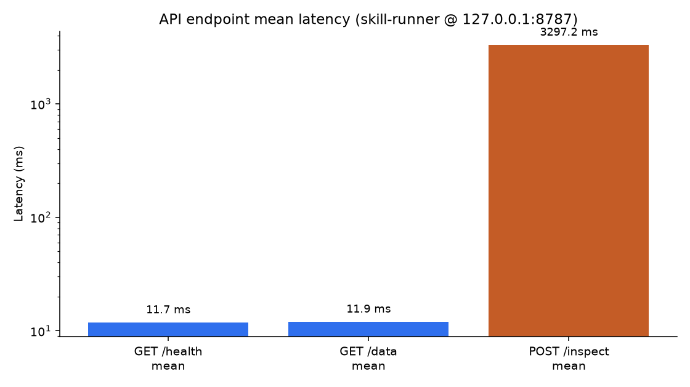
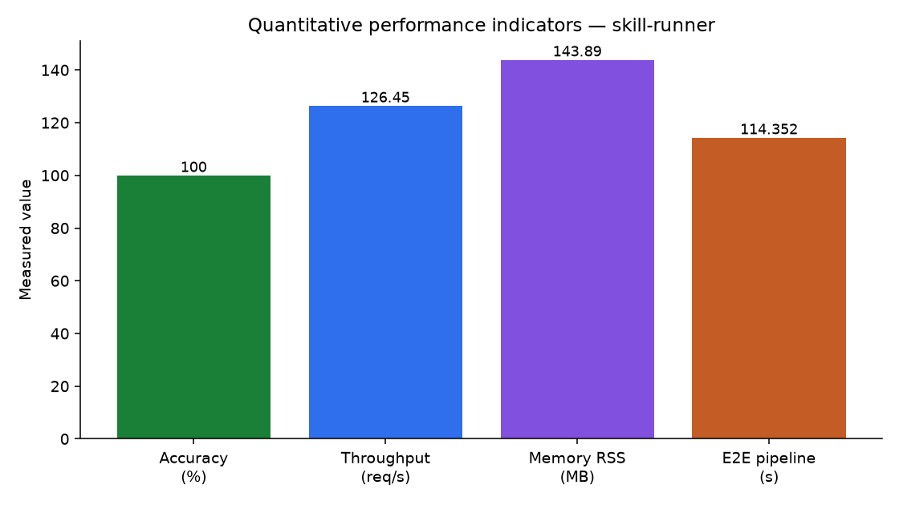

| Metric | Type | Result | Method / notes |
|---|---|---|---|
| Accuracy (unit test pass rate) | Quantitative | 100.0% (18/18) | unittest discover — 0.058s suite |
| Latency GET /health | Quantitative | mean 11.74 ms · p50 14.875 · p95 16.292 | n=50 sequential requests |
| Latency GET /data | Quantitative | mean 11.93 ms · p50 15.056 · p95 16.047 | n=30 sequential requests |
| Latency POST /inspect | Quantitative | mean 3297.233 ms · p50 3258.32 | n=5 — Excel parse dominates |
| Throughput GET /health | Quantitative | 126.45 req/s (200/200 OK) | Sequential client, 1.5816s window |
| Memory footprint (RSS) | Quantitative | 143.89 MB (pid 16988) | Uvicorn worker listening on :8787 |
| E2E CIP pipeline latency | Quantitative | 1m 54.352s for 6989 rows | n8n POST /run prototype evidence |
| Interface usability / clarity | Qualitative | High — clear success path, reasoning field, named outputs | n8n canvas + FastAPI /docs + CLI orchestration output |

Source: scripts/measure_performance.py · health/data ~12 ms mean; inspect ~3.3 s (workbook I/O).

The runner is healthy and responsive for control-plane endpoints (~12 ms, ~126 req/s) with a modest ~143.89 MB resident footprint. Correctness checks passed completely (18/18). Workbook inspection (~3.3 s) and full CIP generation (~1m 54s for ~7k rows) dominate end-user wait time — expected for Excel ETL rather than API overhead. Qualitatively, operators get a readable n8n success path and explicit orchestration reasoning, supporting trust and handoff clarity.